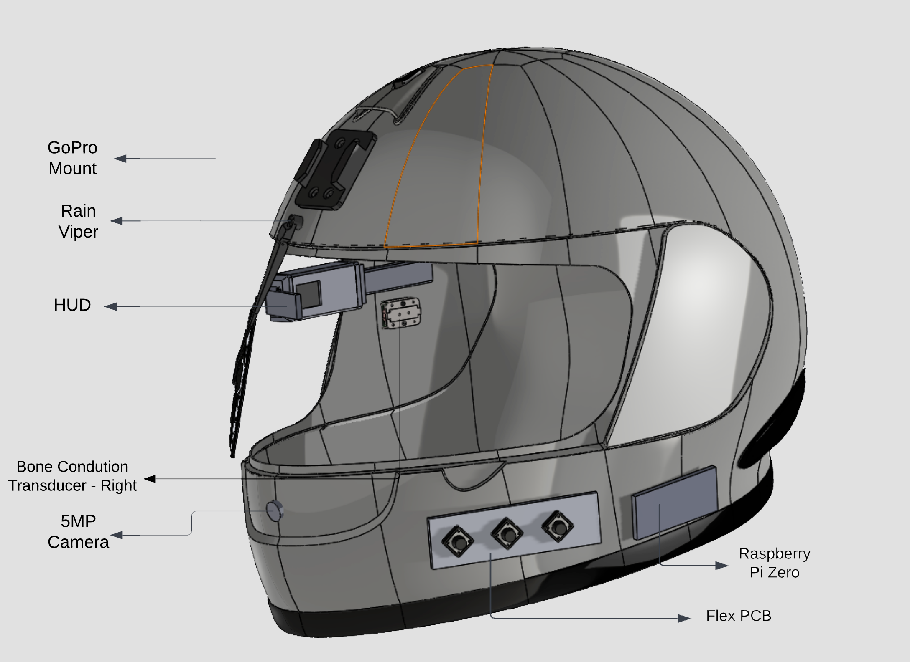

Patents
Bone Conduction & Accident Prevention Smart Helmet | 202141060755 · Dec 25, 2021
Head Gear has been developed with the aim of enhancing the rider experience and preventing accidents. With the increasing number of accidents involving bike riders, there has been a growing need for safety measures that can provide real-time warnings and alerts during distracted driving.
In response to this need, a smart helmet has been designed and developed that incorporates advanced ADAS features such as:
- Accident detection feature
- Embedded Head-up display
- Bone conduction earphones
- Voice control
- Improved rider experience
- Alerts during distracted driving
BakerBot - Smart Kitchen Robot | 202141060759 · Dec 25, 2021
 This innovative robot has been designed to be fully automated and compact, with the ability to make, stack, and store stuffed parathas/rotis using only wheat and water as ingredients. With its compact size and low cost, the baker bot is set to revolutionize the way food is prepared and served, offering a convenient and affordable solution for households and businesses alike.
This innovative robot has been designed to be fully automated and compact, with the ability to make, stack, and store stuffed parathas/rotis using only wheat and water as ingredients. With its compact size and low cost, the baker bot is set to revolutionize the way food is prepared and served, offering a convenient and affordable solution for households and businesses alike.
The key features of the baker bot are:
- Fully Automated
- Compact Size
- Low-Cost
- Intelligent IoT control
- Uses only wheat and water as ingredients
- Ability to make aloo parathas/stuffed breads
- Makes, stacks, and stores finished products in hotboxes